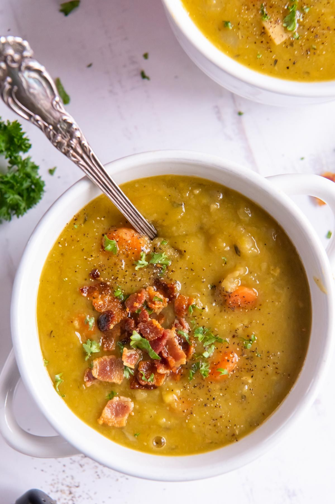

Split Pea Soup

- Meal
- Dinner
- Serves
- 6
- Protein
- legume (green split peas) + bacon garnish
- Cook
- stovetop · 20 min active / 1 hr 45 min total · easy
- Make-ahead / leftovers
- yes (thickens overnight; thin with broth; freezes) / yes
- Mediterranean
- no
- WW tier
- light
- Status
- Trying out (probation)
Kristine's Kitchen split pea soup: green split peas simmered with onion, celery, carrot, garlic, Yukon gold potato, and thyme in the bacon drippings until thick and velvety, with crispy bacon on top. No ham bone needed.
Ingredients
- 5 slices bacon, chopped
- 1 yellow onion, chopped
- 2 celery ribs, chopped
- 2 carrots, chopped (1/4-inch)
- 3 garlic cloves, minced
- 1 cup chopped Yukon gold potato (1/2-inch, ~5 oz)
- 1/2 tsp dried thyme (or 1 tsp fresh)
- 1/2 tsp salt + 1/2 tsp pepper
- 1 lb dried green split peas, picked over and rinsed
- 8 cups low-sodium vegetable broth
- To serve: whole-grain bread
Method
- Cook the bacon in a Dutch oven over medium until browned, 6–8 minutes. Move to a paper-towel plate with a slotted spoon and refrigerate; leave the drippings.
- Add the onion, celery, and carrot; cook 6 minutes until softened.
- Add garlic, potato, thyme, salt, and pepper; cook 2 minutes.
- Stir in the split peas and broth. Bring to a boil, then cover and simmer 75–90 minutes, stirring occasionally, until the peas break down and the soup thickens (uncover for the last 20 minutes if it needs to thicken).
- Taste and season. Serve topped with the bacon.
Notes
- Kristine's recipe serves 6 — no scaling.
- Bacon is 5 slices across 6 bowls — a garnish-level amount, but it's processed meat; count it loosely against the red/processed cap. Vegetarian route: 2 Tbsp olive oil instead of bacon fat + 1/2 tsp smoked paprika (that version is Mediterranean ✓).
- Mostly hands-off simmering — a Sunday-afternoon soup that covers two dinners or a week of lunches.
- Not Ham and White Bean Soup — split peas, pureed texture, bacon garnish only.
- Mediterranean ✗ as written: bacon-fat base, and the bread is an optional side — legumes + vegetables = 2 of 4. light.